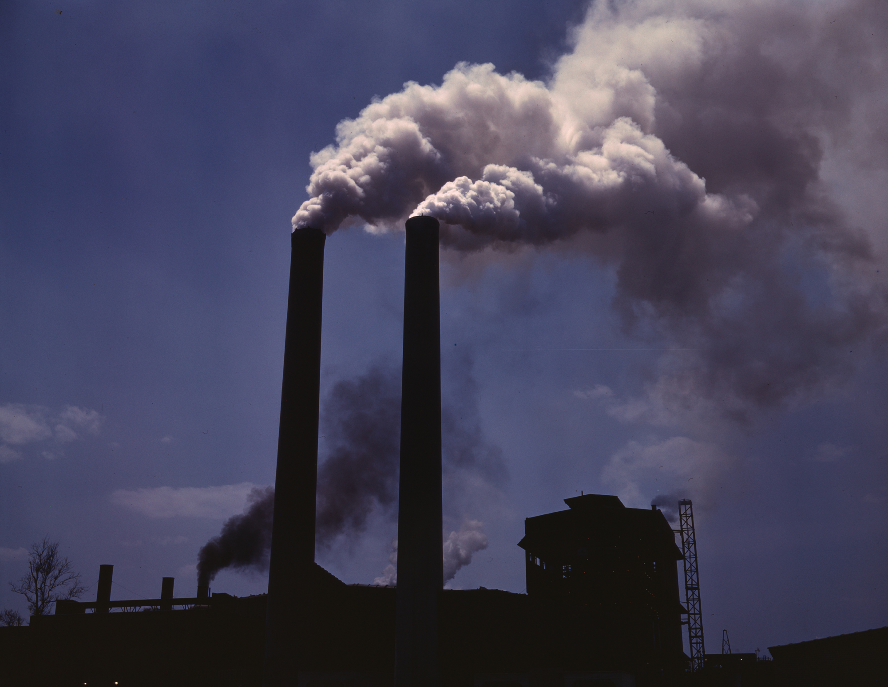

Impacto ambiental
No cabe duda de que el desarrollo tecnológico a lo largo de la historia de la Humanidad ha contribuido a mejorar su calidad de vida, pero ¿seguro que todo son ventajas...?
|
El desarrollo tecnológico produce una modificación negativa en el entorno natural como consecuencia de la explotación de sus recursos, siendo sus principales impactos ambientales la contaminación y el agotamiento de los recursos. Mientras que la contaminación supone un deterioro ambiental que dificulta el desarrollo y bienestar de la vida en el planeta, el agotamiento de los recursos acabará provocando escasez de suministros clave para el desarrollo económico y social que conocemos hoy en día. |
 Imagen de Alfred T. Palmer, de dominio público, en Wikimedia Commons |

Según el medio contaminado distinguimos los tres grandes bloques que aparecen en la tabla siguiente.
| Contaminación atmosférica | Contaminación de las aguas | Contaminación del suelo |
|
|
|
A continuación veremos, por su importancia, los efectos principales sobre el medio ambiente: el efecto invernadero, la lluvia ácida, el agotamiento de los recursos y el tratamiento de los residuos.
Efecto invernadero
La lluvia ácida
Agotamiento de los recursos
Tratamiento de los residuos
Además de todos aquellos productos y componentes que puedan ser reutilizables, ¿qué podemos hacer con los millones de toneladas de residuos sólidos urbanos que produce la humanidad a diario? Parece que la acumulación en vertederos ya no son una solución viable ni ecológica. Veamos qué propone el siguiente documental.